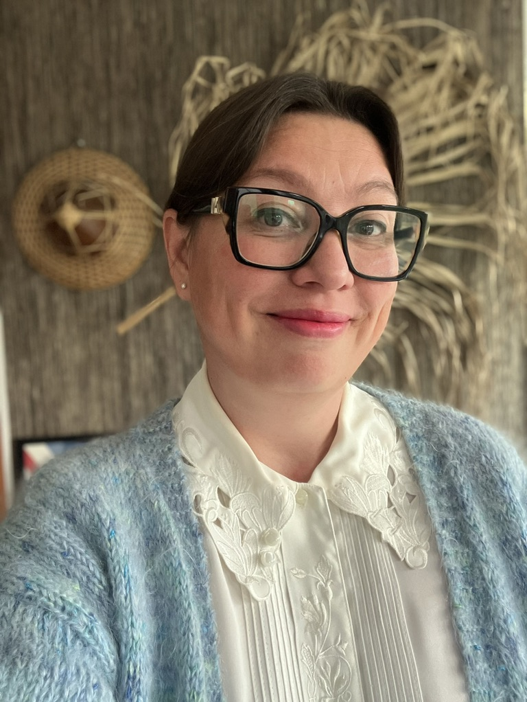

Buenas Consulting erbjuder senior konsultkompetens inom projektledning, verksamhets- och produktutveckling, content och teknisk kommunikation.
Bakom Buenas står jag, Anna. Jag kombinerar strategiskt perspektiv med operativ genomförandekraft – från att identifiera behov och skapa struktur till att samordna människor, driva arbetet framåt och leverera resultat.

Jag trivs bäst i gränslandet mellan verksamhet, teknik, innehåll och användare – särskilt i uppdrag där många delar behöver hänga ihop.
Min bakgrund sträcker sig från teknisk kommunikation och digitalt innehåll till produktägarskap, business analysis, projektledning och koordinering av internationella team. Det gör att jag kan se både helheten och detaljerna, ställa rätt frågor och omsätta komplexa behov till tydliga arbetssätt och konkreta leveranser.
Ni arbetar direkt med mig genom hela uppdraget. Jag sätter mig snabbt in i verksamheten, tar ansvar för min del av leveransen och skapar tydlighet kring vad som behöver göras, av vem och varför.
Jag är van vid tekniska produkter, stora informationsmängder, många intressenter och internationella team. Jag skapar struktur, identifierar beroenden och gör komplex information och komplexa processer lättare att förstå och arbeta med.
Jag stannar inte vid rekommendationer och presentationer. Jag kan sätta riktning, skapa roadmap och arbetssätt – men också arbeta operativt med innehåll, krav, dokumentation, koordinering och leverans. Det skapar kontinuitet från idé till färdigt resultat.
Ni får en senior konsult som kan röra sig mellan verksamhet, teknik, innehåll och användare – och mellan strategiskt och operativt arbete beroende på vad uppdraget kräver.
Behovs- och kravanalys, backlog, roadmap och utveckling av digitala lösningar i nära samarbete med verksamhet, användare och utvecklingsteam.
Planerar och driver leveranser, koordinerar team och intressenter och utvecklar arbetssätt som skapar struktur, framdrift och tydligare processer.
Gör komplex information begriplig och användbar genom tydlig teknisk dokumentation, instruktioner och produktinformation anpassad efter målgrupp och användningsområde.
Skapar och utvecklar innehåll utifrån målgrupp, syfte och kanal – för intern och extern kommunikation, digitala plattformar och produkter. Erfarenhet av copywriting och UX writing bidrar till tydliga budskap, rätt tonalitet och innehåll som fungerar i sitt sammanhang.
Strukturerar och utvecklar innehåll, informationsflöden och riktlinjer för långsiktig kvalitet och återanvändning. Koordinerar även översättning och lokalisering för internationella marknader.
Stöttar införandet av nya lösningar och arbetssätt genom kommunikation, utbildningsmaterial och workshops. Använder och utforskar AI som verktyg för smartare innehållsarbete, analys och effektivare arbetsflöden.
Ledande och koordinerande roll i internationella projekt med ansvar för planering, arbetssätt, team och leveranser inom teknisk produktinformation.
Produktägare och content strategist i ett globalt digitaliseringsinitiativ – från behov, roadmap och utveckling till innehåll, användarupplevelse och global lansering.
E-post:
LinkedIn: linkedin.com/in/akl
Buenas – jag översätter mer än ord.